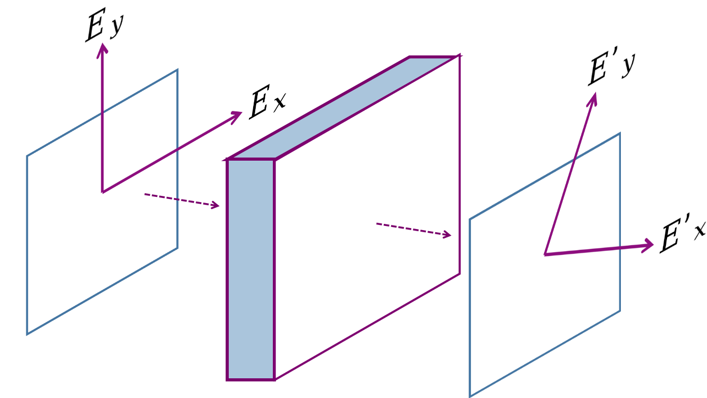

15 Luz com Polarização
O modelo da sessão anterior é uma grande simplificação muito grande da interação luz-matéria, mas não é necessariamente algo pejorativo. A Equação 13.2 é usada rotineiramente em laboratórios de Espectroscopia de Absorção.
Um cenário que necessitamos levar em conta a polarização da luz é na área de Sensoriamento Remoto. Cristais de gelo dentro das nuvens alteram a polarização do espectro eletromagnético, e interfere diretamente em imagens satélite. Vamos adicionar polarização ao nosso modelo para você ter um primeiro contato com Exponenciais de Matrizes - um tópico normalmente ensinado em Física Matemática ou Mecânica Quântica.
A Figura 15.1 ilustra uma versão simplificada do problema. Um feixe de luz com polarização bem definida pelas direções \((E_x, E_y)\) atravessa um material, e altera sua polarização para outra direção \((E'_x, E'_y)\).

Afim de descrever como a polarização é modificada, você precisa conhecer novos conceitos, são eles Vetores de Stokes e Matrizes de Mueller. Vetores de Stokes são usados para representar muito mais que as 2 componentes \((E_x, E_y)\) da polarização, eles são vetores de 4 dimensões [Connect]:
\[ \vec{s} = \begin{bmatrix} E_xE_x^* + E_yE_y^* \\ E_xE_x^* - E_yE_y^* \\ E_xE_y^* + E_yE_x^* \\ i(E_xE_y^* - E_yE_x^*) \end{bmatrix}. \tag{15.1}\]
Se \(\vec{s}\) é a luz do sol, e \(\vec{s}'\) a luz que atravessou a nuvem, podemos relacioná-los com uma matriz \(M\):
\[ \vec{s}' = M\vec{s}. \tag{15.2}\]
A matriz \(M\) é a Matriz de Mueller e representa a física da interação luz-matéria, podendo ser medida em laboratório. Do ponto de vista teórico existem algumas matrizes de Mueller para casos especiais, o que nos leva a pergunta: Existe alguma matriz de Mueller para nosso problema? Queremos uma matriz que represente mudança de polarização com efeitos de absorção, e [Azzam 1978] já respondeu essa pergunta na década de 70.
Em nosso projeto usaremos o formato da matriz bi-isotrópica apresentada em [Arteaga e Kahr 2019], onde cada em termo diferente de zero, inspirado em Azzam [1978], terá o fator de absorção \(\alpha = n(\omega)\sigma\), formando a matriz
\[ M = \begin{bmatrix} \alpha & 0 & 0 & \alpha \\ 0 & \alpha & \alpha & 0 \\ 0 & -\alpha & \alpha & 0 \\ \alpha & 0 & 0 & \alpha \end{bmatrix}. \tag{15.3}\]
Até o momento da escrita desse texto, não existia nenhum resultado para as palavras chaves “bi-isotropic ice” ou “bi-isotropic cloud”. Portanto, \(M\) ainda não possui equivalente físico, e essa matriz tem apenas finalidade didática.
Chegou o momento de botar em prática seus novos conhecimentos, misturamos a Equação 13.1 com a Equação 15.2} para obter nossa nova a equação diferencial: \[ \frac{d \vec{s}}{dx} = -Md\vec{s} \tag{15.4}\]
Com a Equação 15.1} e \(E_x = 0.5\) e \(E_y = 0.25i\) monte sua condição inicial \(s_0\).
Use \(\alpha = 1\) e crie a matriz de Mueller \(M\) seguindo Equação Equação 15.3.
Adapte os seus códigos do Método de Euler do exercício anterior, e resolva a Equação 15.4 no intervalo \(x \in [0,5]\).
Como o vetor \(\vec{s}\) tem 4 componentes, não é possível fazer um gráfico de 4-dimensões. Exiba todos os componente de forma sobreposta em uma figura que evolui ao longo do tempo, \(s_i \times t\).
solução analítica da intensidade da luz quando trabalhamos sem polarização, foi \(I(x) = I_0e^{-\sigma n x}\). Por analogia, a solução do problema atual seria \(s(x) = s_0e^{-Mx}\). Assuma que \(e^{-Mx}\) quer dizer que você deve calcular a função exponencial,
exp, de cada elemento da matriz \(A = -Mx\), e então calcule sua curva teórica.Compare com os resultados numéricos com os teóricos, e para a sua surpresa, o resultado teórico que esta errado.